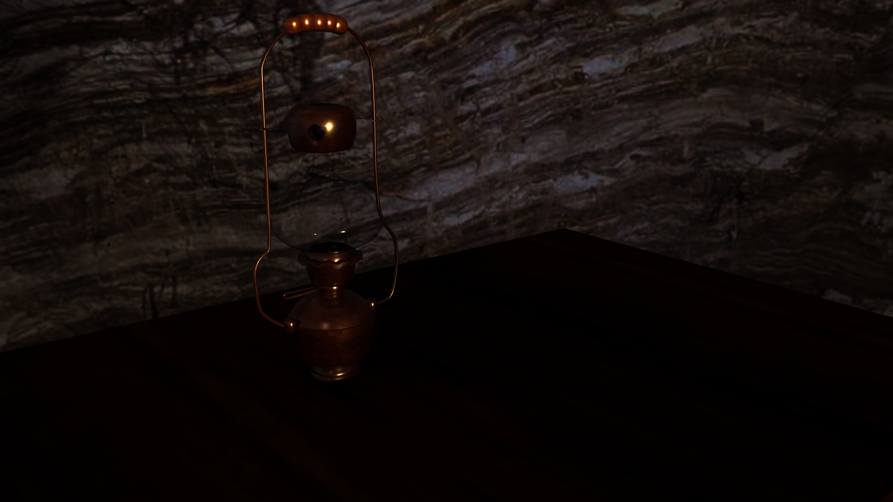
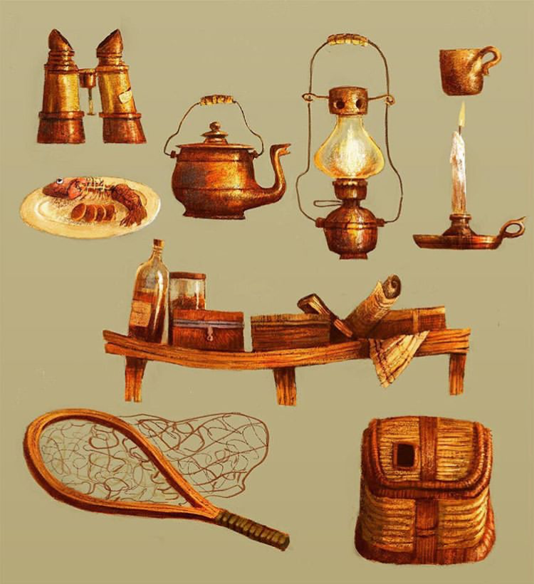
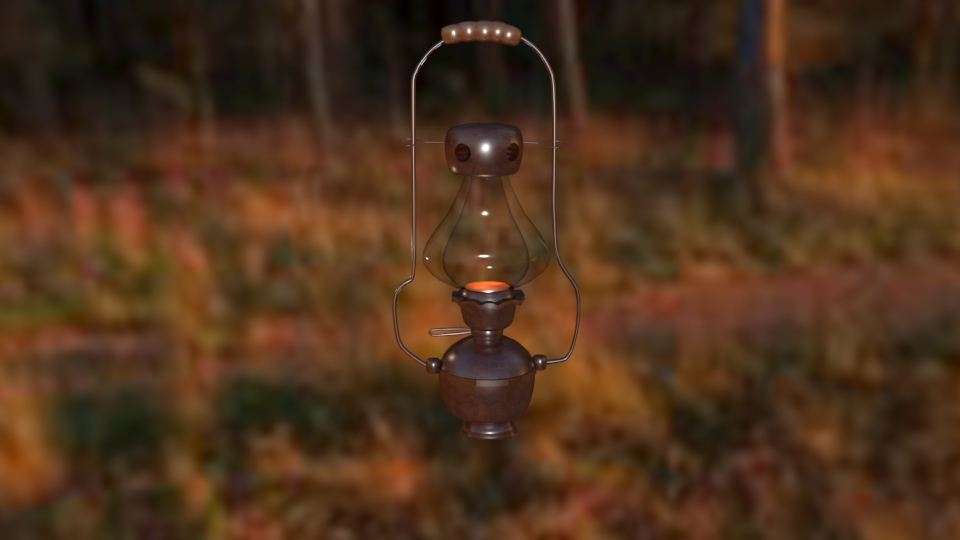
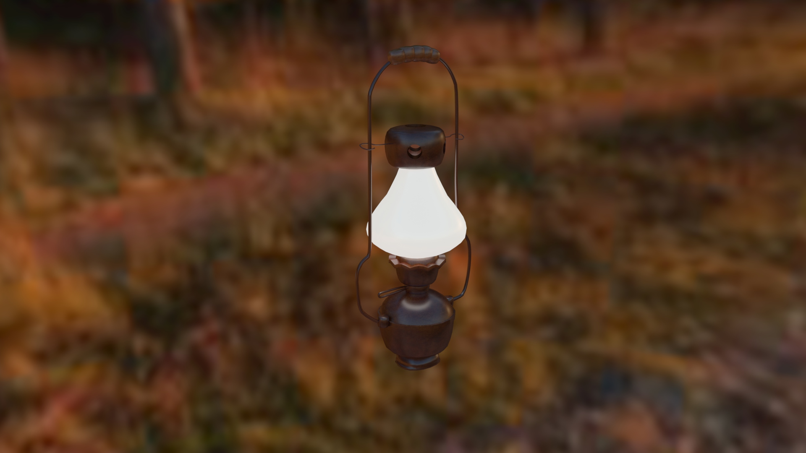
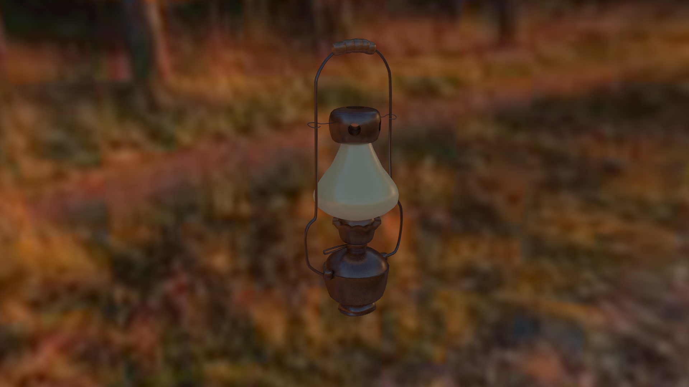
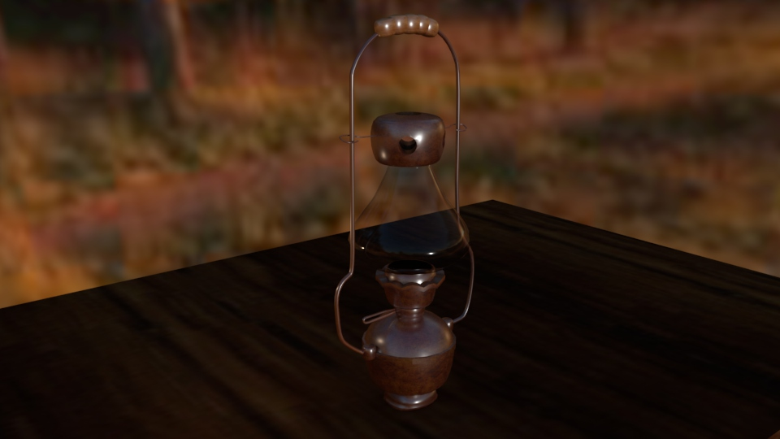
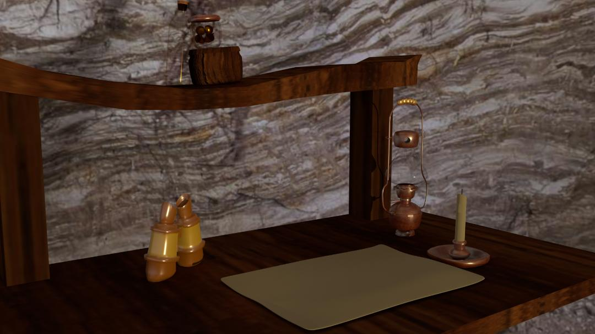

Lauren Chun
Lamp Light
Maya, 2019

While thinking about my ideal adventure, I thought of what things I might bring. As I was looking through Instagram, I stumbled upon a visual development by Nik Henderson, this inspired me to design a lantern to use on virtual adventures. I imagined this lantern brought into a cave base that my character might have set up while resting for the night on her adventures.

Nik Henderson
This model and render are based off of Nik Henderson's visdev
here.

This is what I thought the lantern should look like,
I wanted to light it so I could see what it might look like being held.

I wanted to see what the lamp might look like if the glass was opaque.

What if the opaque glass was unlit?

After deciding that transparent glass would be the most appealing
to myself I thought about where it would be. I placed it on a table.
After all this designing, I thought to finally put it in a dark cave,
I would eventually light up with the light of the lantern.

Once I felt that the lamp was good, I wanted to build a world around it.